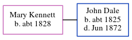

Mary Ann Dale c1828 -
[ Home ] | [ Calendar ] | [ Surnames Index ] | [ Errors ] | [ Family History ]Mary Kennett, the wife of John Dale (the three times great-uncle of Nigel Horne), was born in Westwell, Kent, England c. 18281 and baptised there on 10 Jan 1828. In 1861, she was living in Northgate, Canterbury, Kent, England1.
Citations
- 1861 England Census Online publication - Provo, UT, USA: The Generations Network, Inc., 2005.Original data - Census Returns of England and Wales, 1861. Kew, Surrey, England: The National Archives of the UK (TNA): Public Record Office (PRO), 1861. Data imaged from the National
Family Tree
Map
Generated by ged2site. Last updated on Jul 3, 2024
Known Issues
Baptism information not used to determine a parent